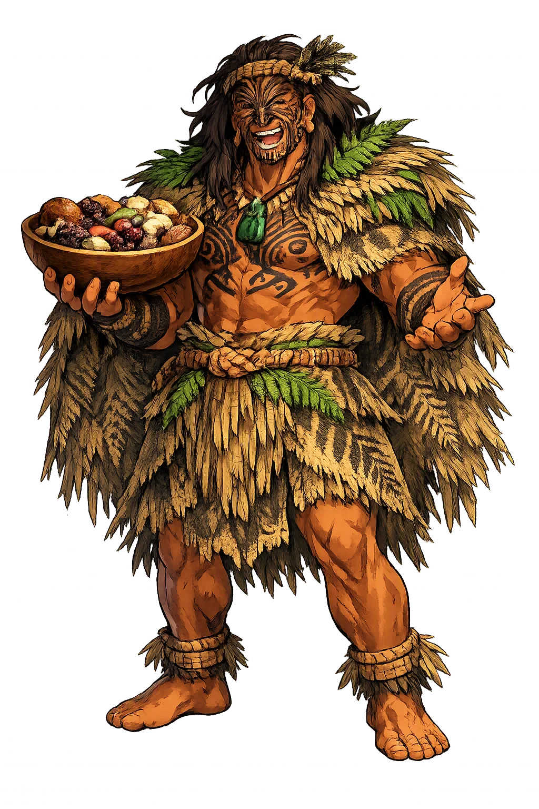
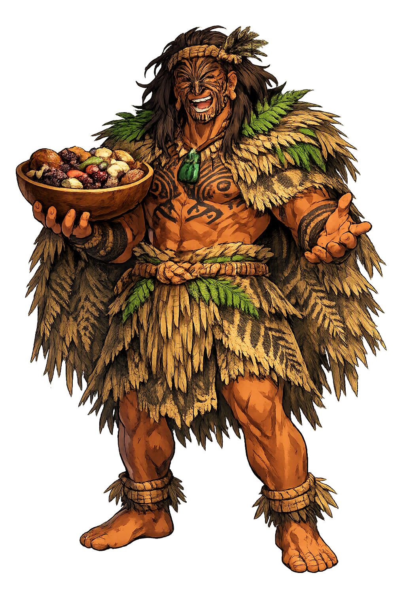

Stories of Haumiatiketike
Haumia-tiketike's stories are chapters of the Māori creation cycle: the separation of sky and earth, the war among the children, and the settlement of the food quest. His single decisive act is a refusal — to leave the earth-mother's body — and from that refusal the wild food of Aotearoa takes its sanctity.
In the Māori creation cycle recorded by George Grey in Polynesian Mythology (1855) and in the fuller recensions of John White's Ancient History of the Māori, the sky-father Rangi and the earth-mother Papa lay locked in an embrace that left no room for light or life. Their children — Tāne, Tangaroa, Tāwhirimātea, Tūmatauenga, Rongo-māui, Haumia-tiketike and the rest — grew cramped in the darkness between them. Among them Haumia was the quiet one, the god whose portion was to be everything the forest floor offered without planting. When at last the brothers voted on whether the parents should be separated, Haumia stood with Tāne: the world must be divided so that light, food, and people could come into it. The genealogy is short and absolute: every wild root dug in Aotearoa descends from this moment, when the children of the dark chose to break their parents' embrace and make room for a harvest.
Tāne thrust his parents apart, raising the sky on his shoulders and pressing the earth down, and the world took its shape. But the separation left some children with nowhere to go. Tāwhirimātea, god of winds and storms, raged at what had been done and turned on his brothers; Tāne and Tangaroa fled to the forests and the sea. Rongo-māui took refuge inside the body of Papa, and Haumia-tiketike went with him — into the earth-mother's bosom, where the two brothers have remained ever since (Grey, Polynesian Mythology, 'The children of Heaven and Earth'). The story explains the Māori food world with an elegant symmetry: Rongo, who hid in the earth, is the god of the kūmara that must be planted; Haumia, who hid with him, is the god of the fernroot that is only gathered. What the mother shelters she does not surrender to the cultivator.
When Tāwhirimātea's storms failed to unmake the world, Tūmatauenga — the fierce brother of humankind — took revenge on all who had sided against him. One by one he hunted his brothers down: Tāne's birds, Tangaroa's fish and seals, the very forests and waves were made food for Tū and his children, which is why people eat them to this day. But two brothers escaped him. Rongo and Haumia had hidden so deep within the body of Papa that no attack could reach them, and so Tū declared his sentence over them instead: because they dared not face him, they would be dug up — unearthed with the digging stick as the food of the conquered (Grey, 'The war of the children'; Orbell 1998). The myth gives uncultivated food its permanent rank in the Māori order: kūmara and fernroot are the flesh of gods who would not fight, and every meal of them replays the ancient war.
Haumia's living cult was the gathering of aruhe. From late winter into spring the people went out to the bracken clearings, dug the starchy rhizomes of the bracken fern with the foot-driven kō, and carried them home in baskets. The roots were beaten clean, washed in running water to leach the bitterness, and steamed for hours in the earth oven — hāngī, or umu tī, 'the fern oven'. When the kūmara crop failed, as it did in cold or wet years, aruhe carried whole communities through; Elsdon Best records that karakia were spoken over the digging, the cooking, and the first taste (Best, Māori Religion and Mythology). In Haumia's domain there is no sowing and no fence: only the earth's own stores, opened by labor and gratitude. The god of wild food teaches that plenty does not always need a garden — it needs a country loved enough to be read.
Wild Food
Haumia-tiketike is the Māori god of uncultivated food — the bracken fernroot (aruhe) dug from the wild with a digging stick, the foil to his brother Rongo's planted kūmara. A child of Rangi and Papa, he hid within the earth-mother's body when the world was divided and never left it: wild food belongs to Papa herself, and cannot be owned, only gathered.
His plant: the bracken fern (Pteridium esculentum), whose starchy rhizomes were dug, beaten, washed, and steamed into a staple of pre-European Aotearoa.
One of the children of the sky-father and earth-mother; brother of Tāne, Tangaroa, Tāwhirimātea, Tūmatauenga, and Rongo (Grey, Polynesian Mythology ch. 1).
When his brother Tāne pried the parents apart, Haumia hid in Papa's bosom and stayed — the wild food that grows unseen within the mother.
The foot-driven spade of his harvest: fernroot was dug, never planted — the difference between Haumia's wild plenty and Rongo's cultivated gardens.
From the original script to the living URL
Haumiatiketike
The name survives in scholarly transliteration. Haumiatiketike is the standard Polynesian romanisation, documented in academic sources — “Haumia tied to the earth”. Because the spelling uses only Latin letters, the form is the same in both ASCII and Unicode.
No indigenous writing system is securely attested for individual polynesian names. The form shown is a modern scholarly transliteration.
haumiatiketike
The plain haumiatiketike form is identical to the Unicode restoration. Because this name is already written in Latin letters, no diacritics, stress, or script information were lost — only capitalization differs.
Haumiatiketike
The Unicode restoration does not need to recover lost marks for Haumiatiketike. Its value is canonical spelling and consistent cataloguing, not the reconstruction of erased orthography. The domain is readable as-is to both DNS and humanity.
Haumiatiketike.com
This restoration is written entirely in ASCII letters — no Punycode encoding stands between Haumiatiketike and the DNS. The domain reads identically to machines and to human eyes.
Owned, ideal, and ASCII forms of Haumiatiketike
Haumiatiketike
The full Unicode restoration. haumiatiketike.com is not in the PuniCodex collection — it is watched for release; if it drops, this temple upgrades to an owned flagship.
How Haumiatiketike was spoken
How Haumiatiketike is preserved in writing
No indigenous writing system is securely attested for individual polynesian names. The form shown is a modern scholarly transliteration.
Contribute scholarly provenance →Haumia-tiketike is the god of what the world gives freely and what we must still work to receive. The fernroot was never sown, never fenced, never owned — but it had to be found, dug, beaten, washed, and steamed for hours before it would feed anyone. His is the theology of uncultivated plenty: generosity without cultivation, labor without property. To meditate on Haumia is to ask where your own food comes from — not only the garden and the market but the ground itself, the wild margins, the places no deed encloses.
Enter Extended Lore